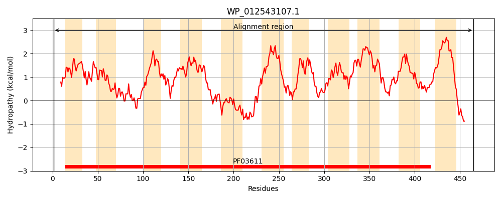
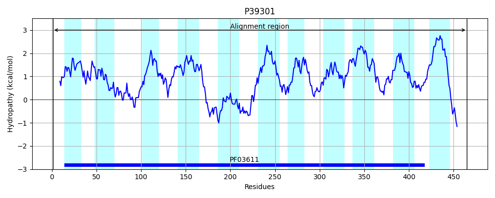
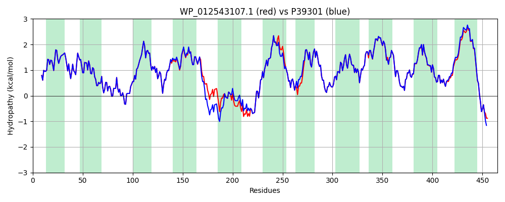

Hit Accession: P39301
Hit TCID: 4.A.7.1.1
Hit Description: gnl|BL_ORD_ID|10254 gnl|TC-DB|P39301|4.A.7.1.1 PUTATIVE TRANSPORT PROTEIN SGAT - Escherichia coli.
Mach Len: 465
e:0.000000
Query TMS Count : 11
Hit TMS Count: 11
TMS-Overlap Score: 12.850000
Predicted Substrates:CHEBI:13861;L-ascorbate
BLAST Alignment:
Score: 2307 , Bit scores: 893 bits, E-value: 0.0e+00, Alignment length: 465, Percentage identity: 96
Query: 1 MEILYNIFTVFFNQVMTNAPLLLGIVTCLGYILLRKSVSVIIKGTIKTIIGFMLLQAGSGILTSTFKPVVAKMSEVYGINGAISDTYASMMATIDRMGEAYSWVGYAVLLALALNICYVLLRRITGIRTIMLTGHIMFQQAGLIAVSFFIFGYGMWTTIICTAVLVSLYWGITSNMMFKPTQLVTDGCGFSIGHQQQFASWIAYKVAPYLGKKEESVEDLKLPGWLNIFHDNIVSTAIVMTIFFGAILLSFGIDVVQAMAGKTHWTVYILQTGFSFAVAIFIITQGVRMFVAELSEAFNGISQRLIPGAVLAIDCAAIYSFAPNAVVWGFMWGTIGQLIAVGILVGIGSSILIIPGFIPMFFSNATIGVFANHFGGWRAALKICLVMGMVEIFGCVWAVKLTGMSAWMGMADWSILAPPMMQGFASIGLAFMAVIILIALAYMFFAGRALRAEEDAEKQLAEASA 465
MEILYNIFTVFFNQVMTNAPLLLGIVTCLGYILLRKSVSVIIKGTIKTIIGFMLLQAGSGILTSTFKPVVAKMSEVYGINGAISDTYASMMATIDRMG+AYSWVGYAVLLALALNICYVLLRRITGIRTIMLTGHIMFQQAGLIAV+ FIFGY MWTTIICTA+LVSLYWGITSNMM+KPTQ VTDGCGFSIGHQQQFASWIAYKVAP+LGKKEESVEDLKLPGWLNIFHDNIVSTAIVMTIFFGAILLSFGID VQAMAGK HWTVYILQTGFSFAVAIFIITQGVRMFVAELSEAFNGISQRLIPGAVLAIDCAAIYSFAPNAVVWGFMWGTIGQLIAVGILV GSSILIIPGFIPMFFSNATIGVFANHFGGWRAALKICLVMGM+EIFGCVWAVKLTGMSAWMGMADWSILAPPMMQGF SIG+AFMAVII+IALAYMFFAGRALRAEEDAEKQLAE SA
Sbjct: 1 MEILYNIFTVFFNQVMTNAPLLLGIVTCLGYILLRKSVSVIIKGTIKTIIGFMLLQAGSGILTSTFKPVVAKMSEVYGINGAISDTYASMMATIDRMGDAYSWVGYAVLLALALNICYVLLRRITGIRTIMLTGHIMFQQAGLIAVTLFIFGYSMWTTIICTAILVSLYWGITSNMMYKPTQEVTDGCGFSIGHQQQFASWIAYKVAPFLGKKEESVEDLKLPGWLNIFHDNIVSTAIVMTIFFGAILLSFGIDTVQAMAGKVHWTVYILQTGFSFAVAIFIITQGVRMFVAELSEAFNGISQRLIPGAVLAIDCAAIYSFAPNAVVWGFMWGTIGQLIAVGILVACGSSILIIPGFIPMFFSNATIGVFANHFGGWRAALKICLVMGMIEIFGCVWAVKLTGMSAWMGMADWSILAPPMMQGFFSIGIAFMAVIIVIALAYMFFAGRALRAEEDAEKQLAEQSA 465 | Protein Hydropathy Plots: |
|---|
|  |  |
Pairwise Alignment-Hydropathy Plot:
|
|---|
|  |